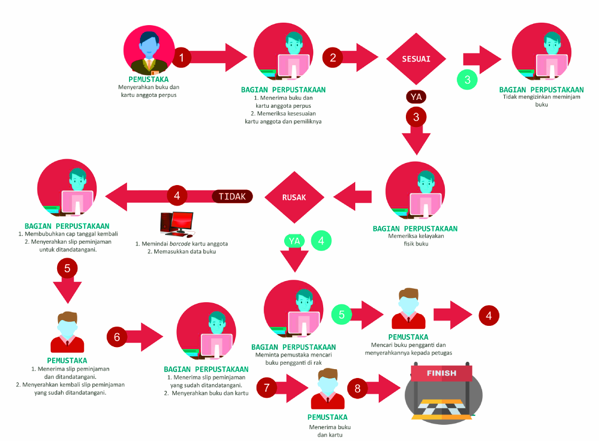
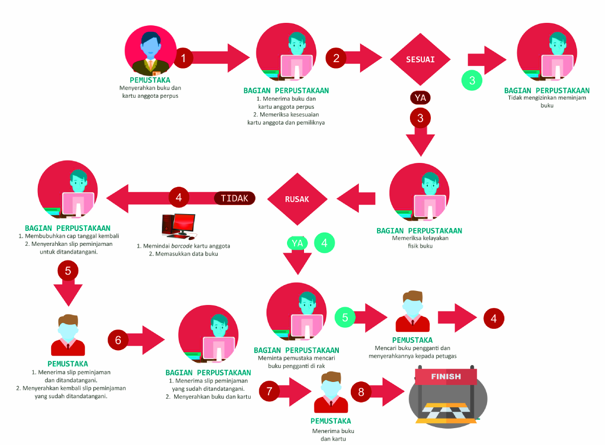

Alur Peminjaman
Buku dapat dipinjam dari perpustakaan kampus mana pun, tetapi kebijakan peminjaman di setiap perpustakaan mungkin berbeda. Untuk informasi tambahan mengenai kebijakan sirkulasi dan koleksi khusus di perpustakaan kampus tertentu, silakan hubungi perpustakaan terkait.
Durasi peminjaman buku bervariasi dan tergantung pada buku dan status pengguna di universitas. Oleh karena itu, durasi peminjaman harus diperiksa untuk setiap buku secara individual. Informasi ini dapat ditemukan di katalog perpustakaan dengan masuk ke akun pengguna Anda. Jika ada perbedaan antara apa yang tercantum dalam katalog dan situasi sebenarnya, silakan berkonsultasi dengan pustakawan

Setiap mahasiswa dan dosen bertanggung jawab untuk mengembalikan buku tepat waktu. Status buku yang dipinjam dapat dipantau melalui kartu pembaca di website perpustakaan. Penjelasan tentang kartu pembaca tersedia di situs web perpustakaan Setiap orang yang mengetahui sebelumnya bahwa mereka tidak akan dapat mengembalikan buku tepat waktu karena bepergian ke luar negeri, tugas cadangan, dll., harus mengembalikan buku ke perpustakaan sebelum ketidakhadirannya. Seorang dosen/peneliti yang sedang cuti di luar negeri wajib mengembalikan semua buku sebelum berangkat. Selama liburan semester / musim panas, perpustakaan beroperasi seperti biasa (kecuali untuk liburan satu minggu di musim panas, yang diumumkan sebelumnya). Buku-buku yang dipesan atau buku-buku yang masa peminjamannya telah habis (dan tidak dapat diberikan perpanjangan lagi) harus dikembalikan, meskipun tanggal pengembaliannya adalah pada Hari Raya. Merupakan tanggung jawab pembaca untuk memastikan bahwa semua informasi kontak mutakhir, termasuk alamat email, alamat tempat tinggal, dan nomor ponsel.
Terima Kasih -
UPT-Perpustakaan
Durasi peminjaman buku bervariasi dan tergantung pada buku dan status pengguna di universitas. Oleh karena itu, durasi peminjaman harus diperiksa untuk setiap buku secara individual. Informasi ini dapat ditemukan di katalog perpustakaan dengan masuk ke akun pengguna Anda. Jika ada perbedaan antara apa yang tercantum dalam katalog dan situasi sebenarnya, silakan berkonsultasi dengan pustakawan

Setiap mahasiswa dan dosen bertanggung jawab untuk mengembalikan buku tepat waktu. Status buku yang dipinjam dapat dipantau melalui kartu pembaca di website perpustakaan. Penjelasan tentang kartu pembaca tersedia di situs web perpustakaan Setiap orang yang mengetahui sebelumnya bahwa mereka tidak akan dapat mengembalikan buku tepat waktu karena bepergian ke luar negeri, tugas cadangan, dll., harus mengembalikan buku ke perpustakaan sebelum ketidakhadirannya. Seorang dosen/peneliti yang sedang cuti di luar negeri wajib mengembalikan semua buku sebelum berangkat. Selama liburan semester / musim panas, perpustakaan beroperasi seperti biasa (kecuali untuk liburan satu minggu di musim panas, yang diumumkan sebelumnya). Buku-buku yang dipesan atau buku-buku yang masa peminjamannya telah habis (dan tidak dapat diberikan perpanjangan lagi) harus dikembalikan, meskipun tanggal pengembaliannya adalah pada Hari Raya. Merupakan tanggung jawab pembaca untuk memastikan bahwa semua informasi kontak mutakhir, termasuk alamat email, alamat tempat tinggal, dan nomor ponsel.
Terima Kasih -
UPT-Perpustakaan